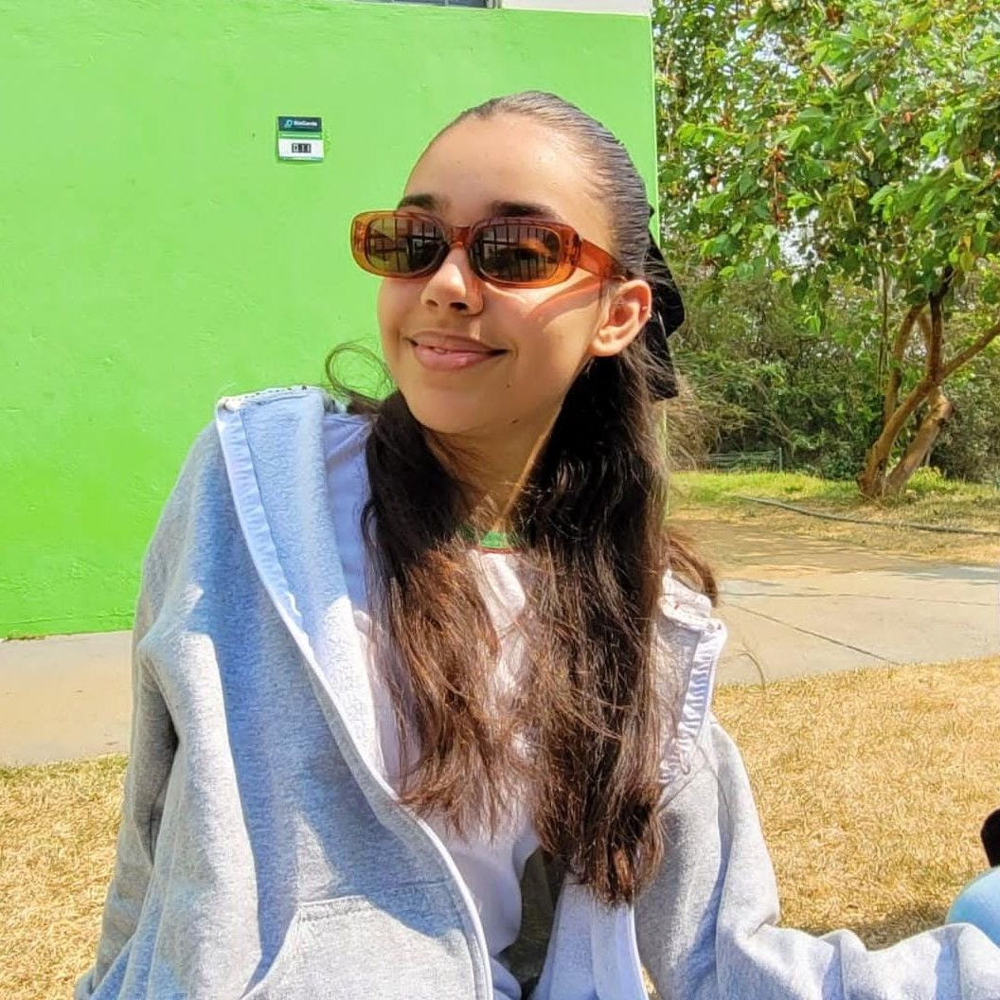
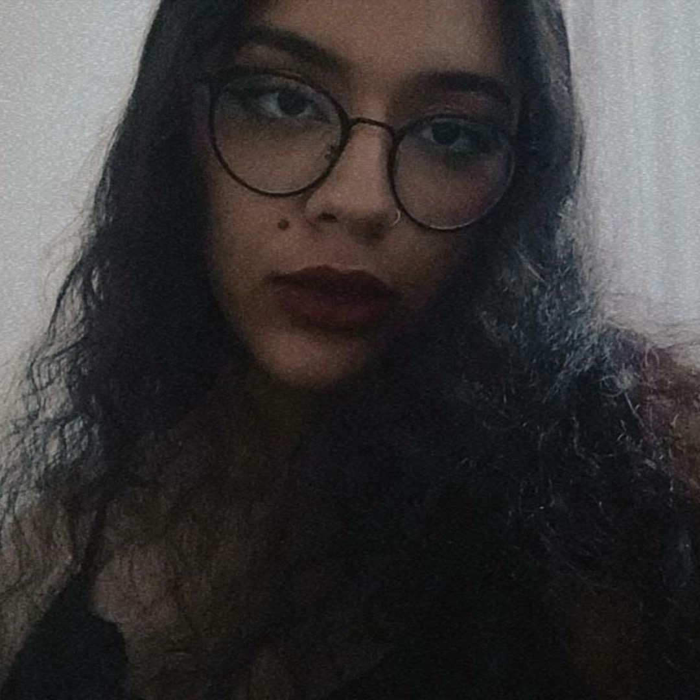
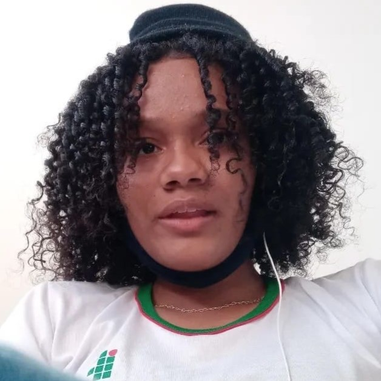
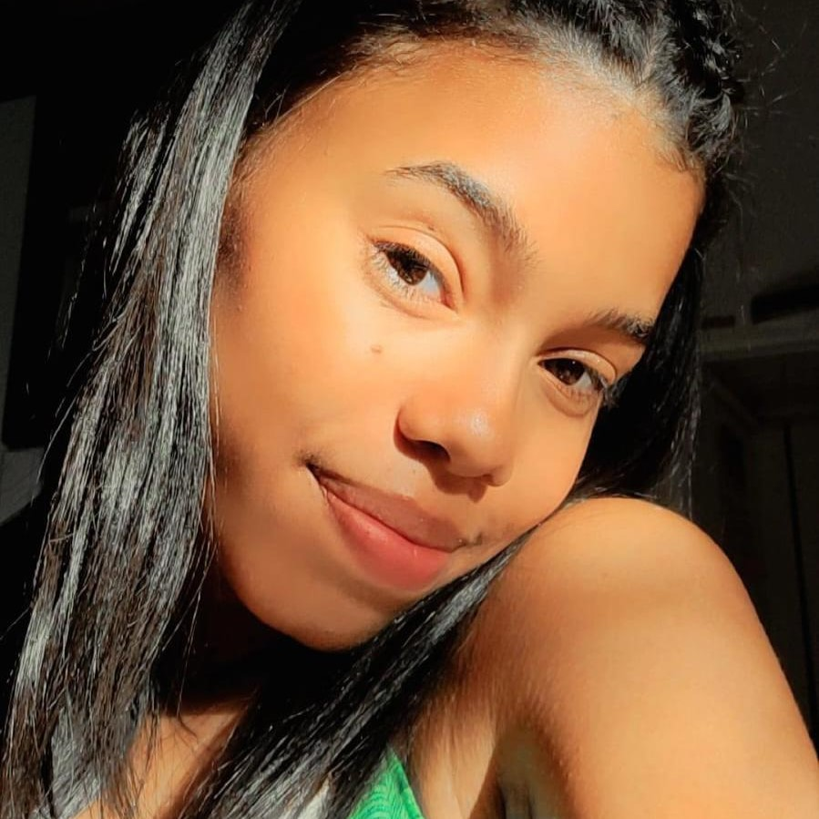

Somos quatro alunas do IFTM Campus Patrocínio, do segundo ano do curso de Informática - formando um grupo para os trabalhos da disciplina de Laboratório de Programação II, lecionada pelo professor Gilberto Viana de Oliveira. Unimos nossos interesses por "cinefilidades", música e leitura, e claro, por viagens também, para a realização desse site!
|  |
Ana Júlia Trindade
|
|  |
Cecília Florentin
|
|  |
Grazielly Freitas
|
|  |
Maria Carolina
|
Wanderlust © 2022 Copyright